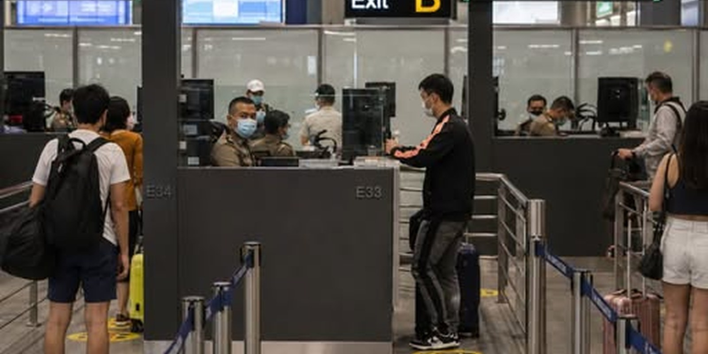

News • Travel & Visas • Immigration Crackdown
29,490 Foreigners Denied Entry to Thailand in Five Months: Why — and How to Not Be One
By Genext Information Systems Staff
Published 21 July 2026 • 7 min read

Passport control at a Thai airport. Nearly 200 people a day were refused entry here and at crossings like it in the first five months of 2026.
Between January and May 2026, Thailand's Immigration Bureau refused entry to 29,490 foreign nationals. That is roughly 195 people a day standing at a counter at Suvarnabhumi, Don Mueang, Phuket or a dusty land crossing at Poipet, being told — politely, and without appeal — that they are getting back on a plane or a bus. Nearly 30,000 in five months is not a rounding error. It is a policy working exactly as designed.
The policy has a name: "No Entry, No Stay, No Escape" — the Immigration Bureau's three-pronged campaign against visa abuse, illegal working and the transnational scam networks that have embedded themselves along Thailand's borders. The number of refusals is the headline, but the more useful story for anyone with a flight booked is what actually gets people turned away, because it is rarely what travellers assume.
The scale of the crackdown
The refusals are only one column in the ledger. Alongside the 29,490 denied entries, Thai authorities have 169,506 names sitting on the immigration blacklist screened through the Advance Passenger Processing System (APPS) — a database checked before you board, not after you land. Officials have also revoked 668 fraudulent education visas and arrested more than 14,000 overstayers and illegal workers for deportation.
APPS matters more than most travellers realise. If your name is flagged, the airline is told at check-in and you are simply not boarded. There is no immigration officer to reason with, no supervisor to appeal to. The refusal happens in Manchester or Dubai or Kuala Lumpur, thousands of kilometres from Thai soil.

Suvarnabhumi arrivals. For most people the whole process takes ninety seconds — unless something in the passport says otherwise.
Why people are actually getting refused
Immigration officers do not turn people away at random, and the vast majority of refusals fall into a handful of predictable categories.
1. The passport tells a story of living here on tourist stamps
This is the big one, and it represents the single most important change of 2026. The rules themselves barely moved. Enforcement did. Officers no longer assess each entry in isolation — they page back through your entire stamp history. Six visa-exempt entries in eighteen months, each one bookended by a same-day border hop, tells its own story. The officer does not need to prove you are working. The pattern is enough.
Immigration Bureau spokesperson Pol. Maj. Gen. Choengron Rimphadee has been blunt about the target: visitors making one or two trips a year have nothing to worry about. The campaign is aimed at people chaining tourist entries together to live, work or run a business without the correct visa.
2. Hitting the land-border cap
Since late 2025, visa-exempt entries by land are capped at two per calendar year. Cross a third time on a visa exemption and you will be turned around at the barrier, regardless of how clean the rest of your record looks. Land entries also give 30 days with limited extension options, while air entries remain uncapped in number. A great many refusals at Aranyaprathet, Mae Sai and Sadao are simply people who did not know the counter was running.
3. No onward ticket
Airlines and immigration both check this now, and enforcement has hardened. You are expected to hold a confirmed onward or return ticket departing within your permitted stay — 30 days for most visa-exempt arrivals. A vague plan to "book something later" is a refusal at the check-in desk, not a discussion at the border.
4. Insufficient funds
The requirement has always existed on paper: 10,000 baht per person or 20,000 baht per family for visa-exempt entry. For years it was almost never checked. Checks are now random but real, and travellers who arrive with a debit card and no cash have been sent back. Officers can also ask to see a bank app balance.
5. Blacklist entries and past overstays
An old overstay, a criminal conviction, a deportation from a previous trip, a name that matches a flagged network — all of these live in the system for years. Overstay bans run from one year (for overstays over 90 days, surrendered voluntarily) up to ten years for longer or arrested cases. People frequently discover a ban they had forgotten about, or never knew existed.
6. No arrival card, or a sloppy one
The Thailand Digital Arrival Card (TDAC) must be completed online within 72 hours of arrival. It is free, it takes five minutes, and getting it wrong — mistyped passport number, no accommodation address, a hotel booking that does not exist — creates precisely the friction that turns a routine wave-through into a secondary inspection.
7. Answering badly
An underrated cause. If you cannot name where you are staying tonight, cannot explain what you do for a living, or say something like "I've been living in Chiang Mai for two years" to an officer holding a tourist-stamp passport, you have handed them the reason. Officers speak to thousands of travellers a week. Vagueness and contradiction stand out.

The stamp is the record. In 2026, officers read the whole book — not just the last page.
The crackdown by the numbers
- 29,490 foreign nationals refused entry, January–May 2026.
- 169,506 names on the APPS pre-boarding blacklist.
- 14,000+ overstayers and illegal workers arrested for deportation.
- 668 fraudulent education visas revoked.
- 2 per year — the cap on visa-exempt land border entries.
What a refusal actually costs you
It is worth being clear-eyed about the consequences, because they are considerably worse than a wasted afternoon. A denial of entry means deportation at your own expense. You are held in the airport's immigration detention area — not a hotel, not a lounge — until you buy a ticket back to your point of origin or your home country. Same-day flights bought under duress are not cheap.
Then there is the stamp. A refusal is recorded, and it follows you. Future entries to Thailand become harder for years, and some travellers report knock-on scrutiny elsewhere in the region. If you have a condo lease, a motorbike, a partner, a business or a dog in Thailand, none of that is a factor the officer weighs.

E-gates speed up the clean cases. They also make the flagged ones stand out faster.
Practical advice: ordinary tourists
If you are coming for two weeks on a beach, the honest answer is that none of this is about you. But a few small habits remove any chance of a problem:
- Fill in the TDAC properly, within 72 hours of arrival, with a real accommodation address. Save the QR code offline — airport wifi fails at the worst moments.
- Hold a confirmed onward ticket dated inside your permitted stay. Check whether your nationality now gets 30 days rather than 60 — the rules shifted in 2026.
- Carry the cash. 10,000 baht per person, or the equivalent, in an accessible form. Checks are random; the answer costs you nothing.
- Have your first night's hotel booked and know its name. "I'll find somewhere" is a red flag no matter how experienced a traveller you are.
- Answer plainly. Where you are going, how long, what you do. Short and consistent.
Practical advice: visa runners and long-stayers
This is where the honest advice gets uncomfortable. If you have been living in Thailand on back-to-back tourist entries, the strategy has stopped being a strategy and become a gamble — one where the downside is detention, a paid-for flight home and a record that makes coming back difficult.
- Count your land crossings. Two per calendar year on a visa exemption. There is no third.
- Count everything else too. If your last twelve months show four or more visa-exempt entries with no other visa in between, assume you are already being read as a resident, not a tourist.
- Do not rely on extensions. Local immigration offices have been instructed to refuse 30-day extensions, and in some cases cancel existing permissions to stay, where visa-run behaviour is detected.
- Fly, don't hop, if you must reset. Air entries are not numerically capped, but they are not invisible either — the passport history is still read.
- Carry evidence of what you say you are. If you are a genuine repeat tourist — property, family, a Thai spouse, a booked tour — have documents. Officers respond to paper.
- Get the right visa. Which brings us to the actual solution.

Thailand still wants visitors. It has simply stopped pretending long-stayers are tourists.
The visa that fits you probably exists
The consistent message from the Immigration Bureau is not "go away" — it is "stop using the wrong door." Thailand has quietly built out one of the broadest visa menus in the region, and most people running borders would qualify for something legitimate if they sat down and looked.
The Destination Thailand Visa (DTV) gives 180 days per entry across five years of validity, aimed at remote workers and people here for Muay Thai, medical treatment or cultural courses; it requires around 500,000 baht held in a personal account. Retirement (Non-O / O-A) visas cover the over-50s. Marriage visas cover those with a Thai spouse. Long-Term Resident (LTR) visas run up to ten years for higher earners, skilled professionals and wealthy pensioners. Education (ED) visas are legitimate when the study is legitimate — the 668 revocations were fakes, not language students.
Sponsored tool • From the ThaiThuk network
Not sure which visa you qualify for?
Working out whether you fit a DTV, a Non-O, an LTR or a straightforward tourist visa is genuinely confusing — the requirements are scattered across embassy pages that contradict each other. ThaiVisaFinder walks you through a short set of questions about your age, income, nationality and why you're coming, then shows you the visa categories you actually qualify for, what each one requires and how long it lets you stay. It takes a couple of minutes and it is free to use — considerably cheaper than a same-day flight home from an immigration detention room.
Find your visa at ThaiVisaFinder →Where this is heading
Nothing about the direction of travel suggests a loosening. The Cabinet has already approved scrapping the 60-day visa exemption that had applied to 93 countries, replacing it with a 30-day allowance across a narrower list — a change that takes effect 15 days after publication in the Royal Gazette. Thailand has simultaneously moved to restore visa-free access for some markets, notably India, while tightening duration for almost everyone. The pattern is consistent: easier to visit, harder to quietly stay.
Add the 180-day tax-residency threshold — spend that long in Thailand in a calendar year and you become a Thai tax resident — and the era of the ambiguous long-term tourist is closing from both ends.
For the overwhelming majority of visitors, none of this changes anything. Book the ticket, file the TDAC, carry the cash, smile at the counter. For the smaller group who have spent years living in a grey zone that everyone tacitly accepted, 2026 is the year the tacit acceptance ended. The 29,490 are the evidence.